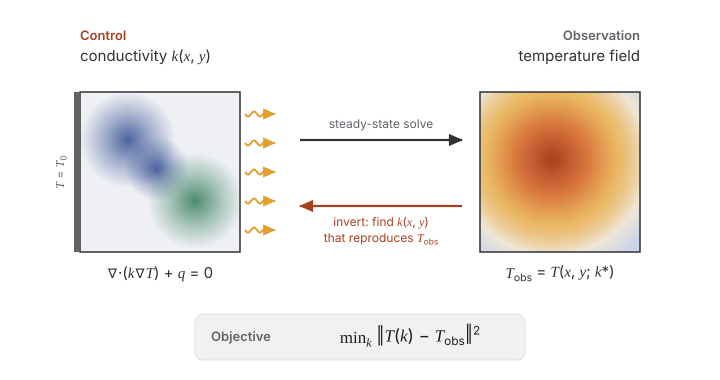
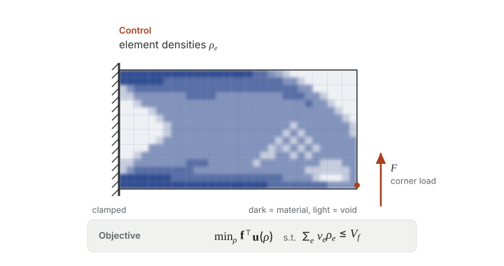
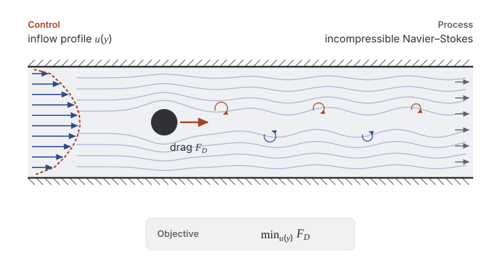

Mosaic: A Benchmark Suite for Differentiable Physics Solvers
NeurIPS 2026, Evaluations and Datasets track
Pasteur Labs
What does it take to get usable gradients out of a differentiable PDE solver? Practitioners who train models through simulations, or use solvers for optimal control and inverse problems, usually need to find the answer by trial and error. Mosaic runs many solvers behind one gradient interface on shared tasks and measures their forward accuracy, gradient accuracy, cost and integration effort, so that you can compare them before committing to one.
The benchmark
This page describes the benchmark suite as presented in the paper. The documentation covers the current suite, with its tasks and results.
Tasks



Solvers with dashed outlines run forward only and serve as references.
Solver interface
Each solver is packaged as a Tesseract, a container that exposes a forward pass, apply, and a vector–Jacobian product, vjp, whatever the solver's language or differentiation method. Swapping one solver for another on a task means changing a single configuration string.
Evaluation protocol
Forward accuracy
Reference agreement. Error against analytic solutions, literature values or converged high-resolution runs, within a tolerance.
Convergence. How the error shrinks as the resolution increases.
Gradient quality
Gradient accuracy. Agreement with finite differences over a range of step sizes, with exact gradients where they exist, and through chains of calls.
Optimization. Convergence with the same optimizer and budget for every solver on a task.
Compute cost
Scaling. Wall time and peak memory of the forward and gradient calls across problem sizes.
Rollout length. How long a rollout one gradient call handles before the solver runs out of memory or time.
Development cost
Setup compatibility. Whether the solver can express the task, and why not if it cannot.
Integration effort. Every departure from a solver's default usage, with its reason and evidence, rated from L0 (a documented option) to L3 (a change to the solver itself).
Empirical findings
Integration effort varies widely
Even among solvers built on AD frameworks, the gradient code needed to wrap them ranges from 20 lines or fewer to more than 200. Some defects only surface in the checks, and the solver reference records each fix with its reason.
After integration, gradients are accurate enough for every task
Every solver that returns gradients agrees with finite differences to a cosine similarity above 0.999 and reaches comparable optima. Harder problems may make gradient accuracy matter more.
Cost differs by orders of magnitude on the same task
Where all solvers reach equivalent results, as on the steady heat and structures tasks, speed and integration effort decide the choice.
Setup compatibility, stability and memory rule solvers out
Some solvers cannot express a task, for example because they support only periodic domains. On long rollouts, all eventually run out of GPU memory, while some return non-finite gradients.

Many practical differences can only be found by benchmarking
Solvers that share a framework, a discretization and a time stepper still differ in stability, and nothing in their design or gradients predicts which ones fail. Testing candidates on the task at hand is what Mosaic is built for.
Explore the benchmark
- Current results
- Every check and plot per task, for the latest solver versions.
- Solver reference
- Each solver's checks, usage, and every departure from its default usage.
- Reproduce the paper
- The
v0.3+paper-reprotag regenerates the paper's figures and tables from the published results, or re-runs the experiments. - Raw results
- The full results behind the paper, with the hardware and package lists of the run.
- Contribute
- We welcome contributions, e.g. ones that add a solver, add a task or improve how a solver is set up.
Use a Mosaic solver in your code
Every solver in Mosaic is a Tesseract that you can differentiate through from your own code, without the benchmark harness. Clone the repository, install the shared schemas and a differentiation bridge, and build the solver's image:
$ git clone https://github.com/pasteurlabs/mosaic && cd mosaic
$ pip install -e mosaic/mosaic_shared tesseract-jax # or tesseract-torch; needs Python 3.12+
$ tesseract build mosaic/tesseracts/navier-stokes-grid/exponax
Then differentiate through it like any other function:
import jax import jax.numpy as jnp from tesseract_core import Tesseract from tesseract_jax import apply_tesseract from mosaic_shared.problems.navier_stokes_grid.schemas import make_vortex_ic v0 = make_vortex_ic(N=64, seed=42) # To switch solvers, build another image and use its name, # e.g. "xlb_navier_stokes_grid:latest" with Tesseract.from_image("exponax_navier_stokes_grid:latest") as solver: def loss(v0): inputs = {"v0": v0, "viscosity": jnp.array([0.01]), "steps": 50} return jnp.mean(apply_tesseract(solver, inputs)["result"] ** 2) grad_v0 = jax.grad(loss)(v0)
The standalone guide covers PyTorch, the mesh solvers, GPUs and loading a solver without a container.
Citation
@inproceedings{rehmann2026mosaic,
title = {Mosaic: A Benchmark Suite for Differentiable Physics Solvers},
author = {Rehmann, Andrin and Zimmermann, Heiko and H{\"a}fner, Dion},
booktitle = {Advances in Neural Information Processing Systems},
note = {Evaluations and Datasets Track},
year = {2026},
eprint = {2606.27895},
archivePrefix = {arXiv}
}